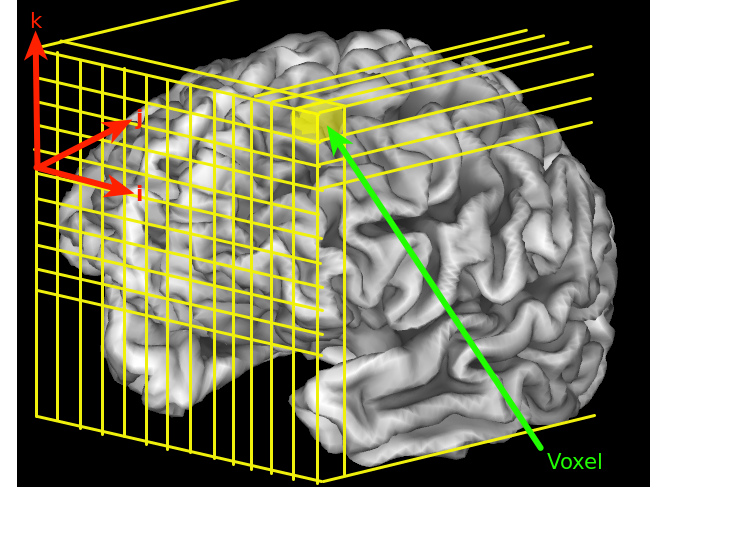
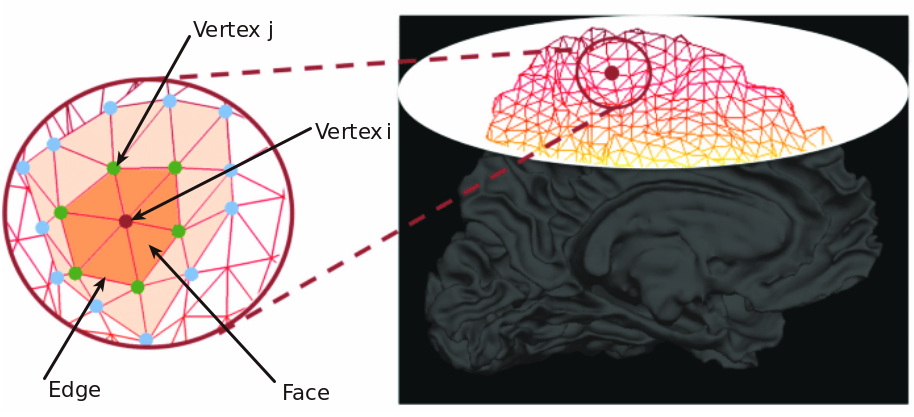
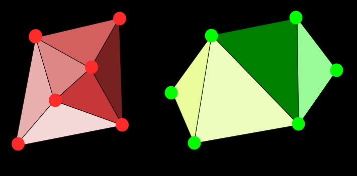

Lesson 8: Introduction to Surface-Based Formats
Volume-based formats
Magnetic Resonance (MR) images are typically acquired as a 3D volume matrix of intensity values which represent the strength of tisue signal at contiguous volume pixels otherwise known as voxels. MRI voxel data is usually acquired in Dicom format but converted to Nifti format for most day to day processing tasks as the later is a much more tractable format to use.
A voxel location is specified by three indexes i, j and k which represent 3D cartesian space. A coordinate transform stored in the header of the Nifti allows one to map between the voxel space i,j,k and world coordinate space x, y, z in metric units (mm)

What is a surface-based format
Another approach to storing MRI data is to use a surface-based format. In this case tissue signal is recorded at distinct locations on the surface of an anatomical structure. These locations or vertices are specified by a single index which is a unique identifier for the vertex. Vertices are connected to 2 other vertices by an edge to create a triangular face.
Many triangles are tesselated in a non-overlapping manner to create a mesh that covers the entire surface. Each vertex is associated with a real world 3D coordinate space location (x,y,x) just like a voxel which is usually in millimeter (mm) length units.See Appendix 1 for a comparison between Surface based models and traditional volume-based models that has been reproduced from a Freesurfer course online.
 Cortical surface reconstruction (image: Pirondini et al (2017) Computationally Efficient Algorithms for Sparse, Dynamic Solutions to the EEG Source Localization Problem
Info
To fully represent a cortical surface (e.g. the boundary between white matter and gray matter) as a 3D model, then the following information is usually stored in a Surface-Based Format by Neuroimaging software:
-
A list of all the vertices in that surface with their x, y and z coordinates in mm units. For a 1mm T1w image, Freesurfer uses about 120,000 vertices to represent one of the hemispheres of the brain.
-
A list of all faces in that surface where a face is a set of three interconnected vertices. For a 1mm T1w image, Freesurfer uses about 300,000 faces to represent one of the surfaces.
There isn't necessarilly a predictable way to determine the number of faces from the number of vertices. For example see 2 different configurations below with the same number of vertices.

There are two main surface models represented by surface-based formats:
-
Meshes - these define the actual surface topology
-
Overlays - these assign functional values to each vertex (e.g. thickness, curvature, myelin content, functional activation, BOLD signal, correlation etc..)
When are Surface-Based formats appropriate?
Surface-based formats are only really useful if you have high resolution anatomical images that allow you to segment the brain into distinct tissue types and/or anatomical structures. They have found most utility for the analysis of the cerebral cortex due to its highly folded geometry which can lead to partial volume errors under regular volumetric analysis pipelines. The cerebellum is also a potential candidate for surface based analysis but requires extremely high resolution anatomical scans to resolve. See this recent paper by Sereno et al 2020.
Why use Surface-Based Formats?
Assuming you do have a good quality, high resolution (at least 1mm) T1w image (this is now accessible to most research groups), why would you want to bother working in surface space for the analysis of the cerebral cortex?
Functional and anatomical validity
The main reason for this is that the cortical sheet in the cerebrum and cerebellum appears to display functional differentiation and organization in distinct cortical areas which are best represented as a 2-dimensional surface Glasser et al, 2013. Functional experiments with visual stimuli have allowed the organization of primary visual areas to be distinctly identified using surface-based methods [Sereno et al 1995] as patches on a 2D flat map. Volumetric approaches have struggled to reveal this functional organization in primary visual cortex.
Processing accuracy and reliability
The neurobiological validity Glasser et al, 2013 of cortical sheet representation as a 2-D surface ensures that processing steps take accurate account of spatial locations and are thus accurate and reliable. In volumetric space, due to the highly convoluted nature of the cortex, adjacent voxels may actually be very distant from each other in reality. Sulcal and gyral gaps are accurately captured by vertex notation and allow preprocessing steps like smoothing, filtering, correlations and any actions that require an accurate inventory of spatial locations being used to operate with less error due to partial volume confounds.
Group analysis
There seems to be a correlation between cortical folds and function. Surface models use these surface features (gyri and sulci) which show correspondence across subjects to improve inter-subject registration which increases the accuracy of group analysis.
Economy/Efficiency of representation
Large areas of brain tissue that are redundant to the analysis can be ignored. Thus the cortex can be represented using smaller file sizes in surface space. This makes the creation of dense connectomes feasible (albeit still computationally intensive) where they were barely manageable in voxel space. This also has an impact with respect to multiple comparisons in univariate whole-brain statistical anaysis.
Note
Another way that economy could be achieved in general is by using fewer vertices in regions where curvature is reduced so that slowly changing geometry is represented by larger triangles. In practice this is not done in neuroimaging as the uniform sampling of vertices is also important for modalities such as functional mri and so vertices are usually created at a fairly regular inteval of ~1mm in Freesurfer.
The GIFTI Format
The Gifti Data Format is used to represent surface-based data. A nice overview of GIFTI and CIFTI files is provided on the balsa website. The GIFTI specifications provide more details on the format itself.
The GIFTI header describes the metadata of the surface information in xml format. The actual data is stored after the header. The GIFTI file can be in ascii or compressed base 64 format.
- The GIFTI format has the extension
.gii. - Mesh model captures the vertex locations and vertex neighbourhood in a
*.surf.giifile - Other derived files like
*.func.giiand*.shape.giiand*.label.giiin combination with thesurf.giifile, support derived measures like fMRI time series, curvature, and parcel labels respectively.
Historical milestones
- Sereno
- Van Essen - Caret
- Dale and Fischl
- etc..
Obtaining Surface-based models today
There are several approaches to creating an accurate surface model from a T1w image. The open source software FreeSurfer {Fischl 2012] is the most established and most widely used package and uses a number of sophisticated algorithms and procedures to take a T1w image, segment it into tissue classes and then identify the boundary points between these tissue clases which then form the surfaces that are the foundation of the surface model.
Some caveats
While the Freesurfer pipeline is usually adequate for most standard pipelines it is possible that if you are studying a less representative population like neonates, children or lesioned/sectioned brains [Makrapoulos 2018] for which Freesurfer is not optimized (for children under 5, white matter is unmyelinated so contrast between grey and white is ambiguous) then you may need to tweak the pipeline or find/develop alternative approaches. Indeed the HCP project worked with the Freesurfer team to develop a version of Freesurfer that could work with higher resolution T1w and T2w images using the --hires flag.
The high-resolution layer-fMRI community is also split on their advocacy for freesurfer with some researchers using it and others deciding to create their own pipelines. See this dicussion by Renzo Huber
Freesurfer Pipeline
The freesurfer pipeline is the standard approach to creating surface models. We provide an overview of the pipeline here which are covered in detail by [Dale et al 1998] and [Fischl et al 1998].
- Segmentation
- Bias-field correction
- etc.
Freesurfer Outputs
Freesurfer outputs surface and volume files. Some of these files .pial. .white, etc are in Freesurfers native surface format. Others are provided in the GIFTI format. The GIFTI matlab library is a versatile package that supports several surface models (like freesurfer, VTK and others) as well as standard GIFTI formats.
The Ballad of Surface and Volume
Oh Surface is Surface, and Volume is Volume, and never the twain shall meet,
But there is neither Surface nor Volume, Border, nor Area, nor Origin
- CIFTI
The GIFTI format is able to manage most requirements for representing surface data however in some cases it is useful to be able to manage both surface and volume models together. For example if one wanted to calculate correlations between vertices on the surface and voxels in a subcortical structure like the hippocampus. The CIFTI format provides support for this scenario. The CIFTI format relies on the NIFTI-2 format as the original NIFTI is restricted to 32767 values in each dimension which is not sufficient to support high resolution surface models which can have as many as 164,000 vertices.
The CIFTI format
CIFTI format used to support both volume and surface data in the same file. Each CIFTI file with surface information is linked to an external gifti surf file which describes the vertex locations and topology.
The CIFTI file header is stored in the NIFTI-2 extensions section in xml format and describes all the metadata for the data.
The actual vertex and voxel data is stored in row-major format in the file.
HCP Workbench
Like freeview will allow us to view GIFTIs and CIFTIs.
References
Coalson, T. S., Van Essen, D. C., & Glasser, M. F. (2018). The impact of traditional neuroimaging methods on the spatial localization of cortical areas. Proceedings of the National Academy of Sciences, 115(27), E6356-E6365.
Dickie, E. W., Anticevic, A., Smith, D. E., Coalson, T. S., Manogaran, M., Calarco, N., ... & Voineskos, A. N. (2019). ciftify: A framework for surface-based analysis of legacy MR acquisitions. Neuroimage, 197, 818-826.
Glasser, M. F., Sotiropoulos, S. N., Wilson, J. A., Coalson, T. S., Fischl, B., Andersson, J. L., ... & Van Essen, D. C. (2013). The minimal preprocessing pipelines for the Human Connectome Project. Neuroimage, 80, 105-124.
Appendix 1: Volume vs Surface Model
This table was culled from this presentation.
Volume |
Surface |
|---|---|
| Uniform grid | Non-uniform grid |
| Voxel intersection of grid lines | Vertex is intersection of triangles |
| Columns, rows, slices | Vertex index |
| Voxel size/distance is fixed | Distance between vertices ~ 1mm |
| Voxel assigned a value | Vertex assigned a value |
| Voxel located at x,y,z (mm) | Vertex located at x,y,x (mm) |